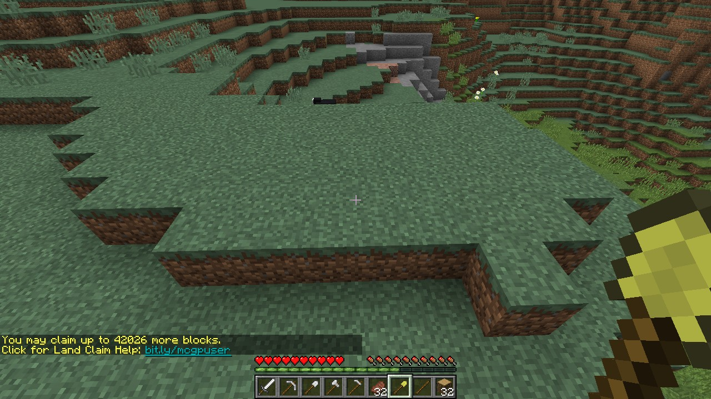
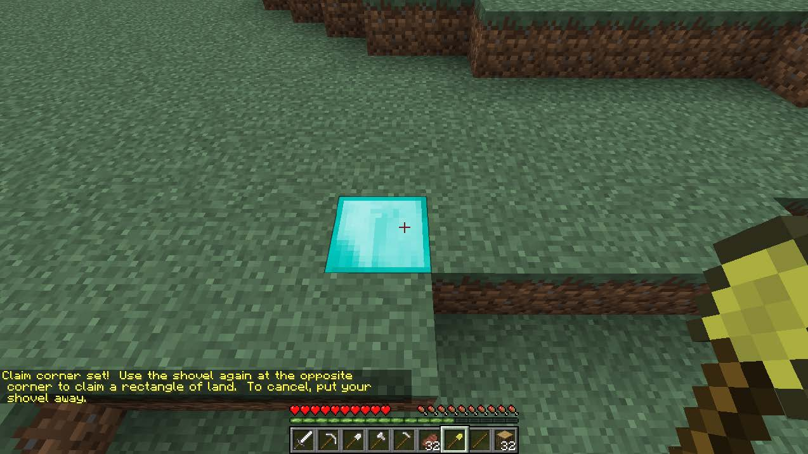
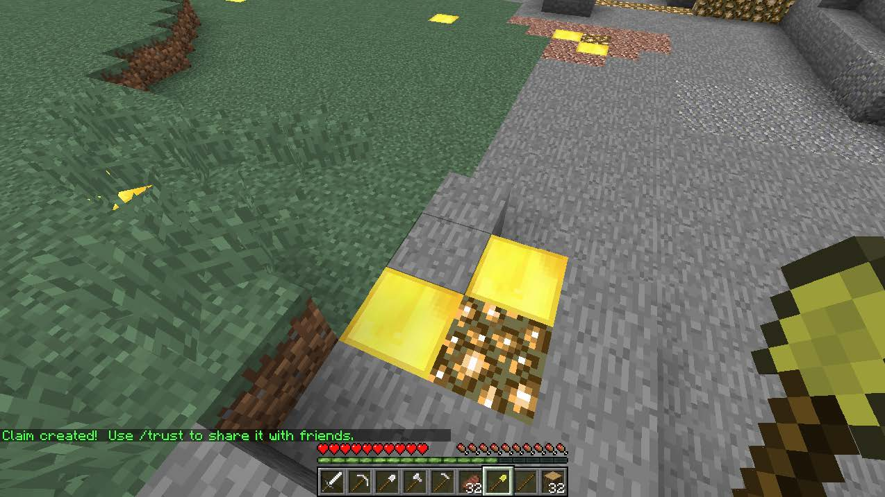

Player Guide
Jump to a section: ; First Join ; Building a House ; Claiming Land ; Server Ranks ; CraftbookWant this guide as a PDF? Download it here.
First Join
When you first join, you will be spawned here. Please read the signs on the boards around you to become familiar with the server rules, ranks, commands, and minigames! You are given a “starter kit” consisting of the items in the image above. (Use these wisely!) Here's just a few facts about the spawn area:
| Worlds | Border Size (from X:0 Z:0) | Land Claiming | Griefing | PvP |
|---|---|---|---|---|
| Survival | 100,000 | + | - | - |
Nether |
50,000 | - | + | + |
The End |
50,000 | - | + | + |
Building a House
You start out as a [Guest] rank on the server which doesn’t give you many commands and perks. It is recommended that you get yourself promoted to a [Member] rank as soon as possible. In order to to do that, you need to build a house (which meets certain requirements), and show a [Mod] or another staff member in-game. Requirements:
How to Claim Land
Protect your land and creations from griefers using a gold shovel provided in the starter kit or by typing: ‘/kit claim’ (Part of the “GriefPrevention” plugin).
Step One: Equip yourself with a gold shovel.
Step Two: Imagine creating a rectangular shaped protection zone. Right click anywhere you would like the corner of this rectangle to be.
Step Three:Right click again at the opposite corner of this rectangle.
Thats’s it! Anything within this rectangle is now protected from griefers. Protection is from sky to bedrock. You can check claim boundaries and the owners of the claims by right clicking with a stick. All players start with 2,000 claim blocks. You accumulate 1,000 blocks per hour of gameplay, up to a max of 500,000 blocks. Here are some helpful commands:
Server Ranks
There are 9 player ranks:
| Ranks | Promotional Requirements |
|---|---|
| [Guest] | This is the rank everyone starts with when they first join the server. |
| [Member] | Build a house and show a [Mod] or another staff member in-game. |
| [Member+] | Play for at least 50 hours. |
| [Veteran] | Play for at least 300 hours. (or a previous VIP/VIP+) |
| VIP/VIP+ | You may buy these ranks in-game.
30 days of VIP: 50 ender pearls.
30 days of VIP+: 200 ender pearls.
Create a chest in-game and deposit the appropriate amount of ender pearls inside.
Reply in the Discord chat in the #purchase-vip channel with the following:
|
| [Mod] | Be chosen. Don't ask. |
| [Admin] | Currently not accepting. |
| [Owner] | No. |
CraftBook
The server uses the CraftBook plugin to add some neat additions to the normal gameplay. Currently, we have the following features enabled. Please check out the tutorial pages on how to use them: